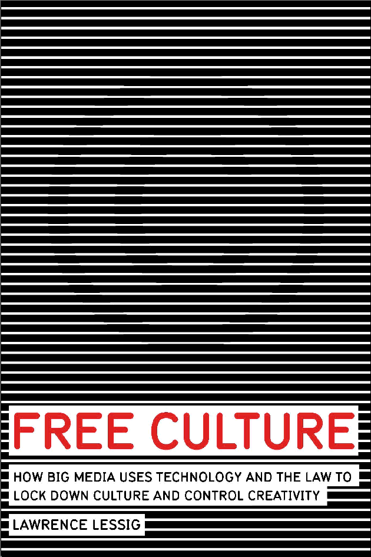

I am currently studying Digital Media Design at the University of Hertfordshire. I have vast experience with WordPress and Google's suite of products. I am passionate about creating content and consider myself to be a storyteller of some sort. My current projects include two anonymous blogs. The first one is where I discuss world events as they relate to the continent of Africa.
The second project is one that is slowly becoming dear to me. This blog will tell the stories of people who are mostly down on their luck. The idea is to use images, words and video to tell their stories. The revenue from advertising will be shared between the blog and the individuals' whose stories I intend to tell. I am also an avid reader. The last book I read is called Free Culture by Lawrence Lessig. I am currently reading Ogilvy On Advertising, this is a must read for anyone who intends working in media.
This is a must read for anyone going into media especially advertising.

Read this as part of an assignment. Although the book is primarily about free culture, it gives great insight about early inventions in America.